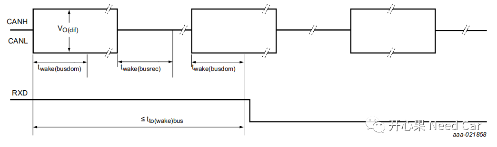
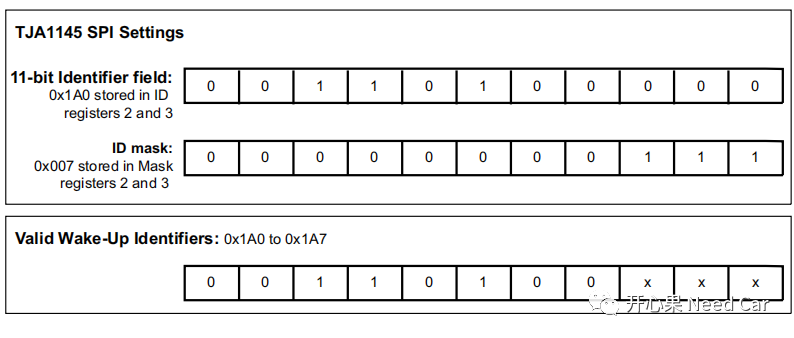
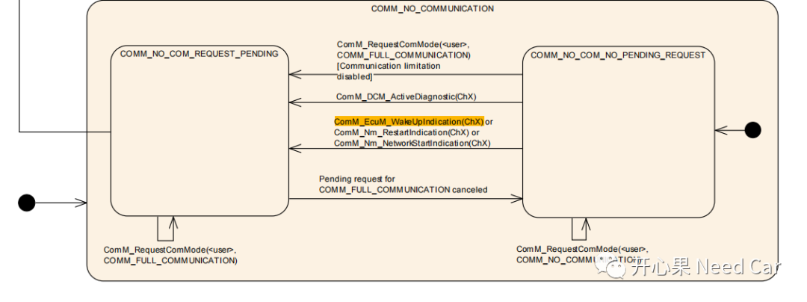
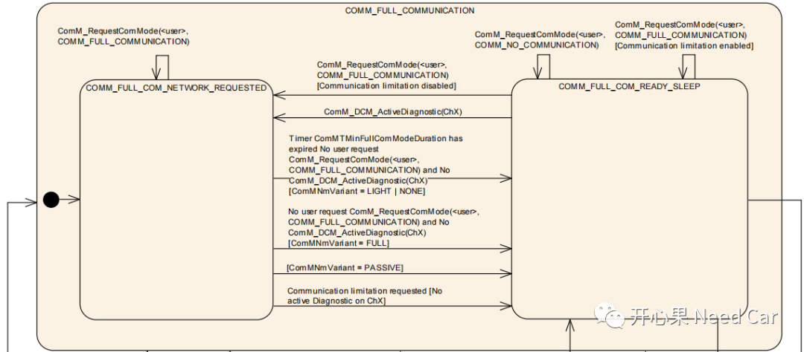
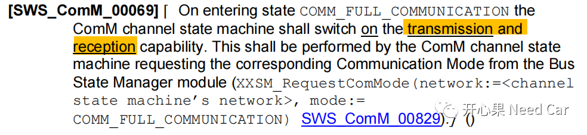
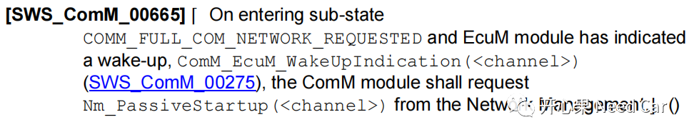

在Autosar的网络管理中，一个网段内，有的节点充当主动节点，主动唤醒网络，有的节点属于被动节点，被动接收同网段内其他节点的网络管理报文，网络被动唤醒。在这纷杂的网络关系中，一个节点被动收到一帧网络管理报文，如何唤醒网络呢？
我们知道，ECU在休眠之前，会提前设置好唤醒事件，eg：设置BUS类型唤醒，即：让Transceiver进入SLEEP或者STANDBY模式，监听总线（BUS）是否有唤醒事件。根据Transceiver的特性，Transceiver可以监听的唤醒事件分为两种：
- CAN标准唤醒，没有PN（partial networking）功能
- Wake-up frame (WUF)唤醒，有PN功能
CAN标准唤醒是指满足twake(busdom)->twake(busrec)->twake(busdom)时序要求的总线变化，唤醒Pattern如下所示：

这种唤醒方式并不一定是收到一帧完整的报文才能唤醒，而是满足唤醒时序（Timing）变化即可将Transceiver使能（收到一帧报文，一般会满足上述时序），电路设计中，Transceiver的INH Pin脚本往往和电源管理芯片SBC（System Basic Chip）的WAEK Pin连接，进而可以使得uC的供电，唤醒ECU（提示：此时网络还没有唤醒）。此唤醒方式，说明Transceiver支持PN功能（eg:NXP TJA1145等），即：可以通过指定范围的报文唤醒，eg：0x500~0x53F的NM Msg唤醒。此方式需要ECU下电前进行Transceiver的PN配置，示意如下所示：
（二）EcuM识别唤醒事件
当总线上有上述的唤醒事件（eg：收到一帧网络管理报文，满足上述唤醒时序）发生时，ECU唤醒，进而程序开始执行，此时EcuM即可检查唤醒事件，调用接口EcuM_CheckWakeup()，此接口是Callout接口，由用户实现。EcuM如果想进一步确认唤醒事件的有效性，需要依赖Transceiver或者Controller，通过这两个硬件检查唤醒事件。以Transceiver检查唤醒事件为例，当Transceiver识别到真的有唤醒事件时，会通过标准接口EcuM_SetWakeupEvent()告知EcuM有唤醒事件。虽然EcuM识别到了唤醒事件，但是，通信使能这件事，它说了不算，需要ComM决定。EcuM通过接口ComM_EcuM_WakeUpIndication()告诉ComM，有唤醒事件发生，而且是BUS有情况导致的（收到了网络管理报文）。当ComM收到EcuM通知以后，切换状态到COMM_NO_COM_REQUEST_PENDING。
ComM在COMM_NO_COM_REQUEST_PENDING状态下，进一下检查EcuM是否进入RUN模式，且Channel对应的CommunicationAllowed=TRUE。如果满足，ComM进入COMM_FULL_COM_NETWORK_REQUESTED状态，如下所示：
ComM进入COMM_FULL_COM_NETWORK_REQUESTED状态（COMM_FULL_COMMUNICATION子状态），意味着什么呢？答：对应Channel的收/发使能，如下所示：

ComM对应Channel的收/发使能，意味着报文可以正常接收和发送。但是，因为节点是被同网段内的其他节点NM Msg唤醒的，因此，网络被动唤醒，即：调用Nm_PassiveStartup()完成网络的被动唤醒，因为是被动唤醒，网络没有快发模式，Autosar解释如下所示：

综上，阐述了一帧网络管理报文是如何被动唤醒网络和通信的。
点击下方关注，一起聊聊Autosar/嵌入式，如果需要，联系作者进群，给你更专业的解答